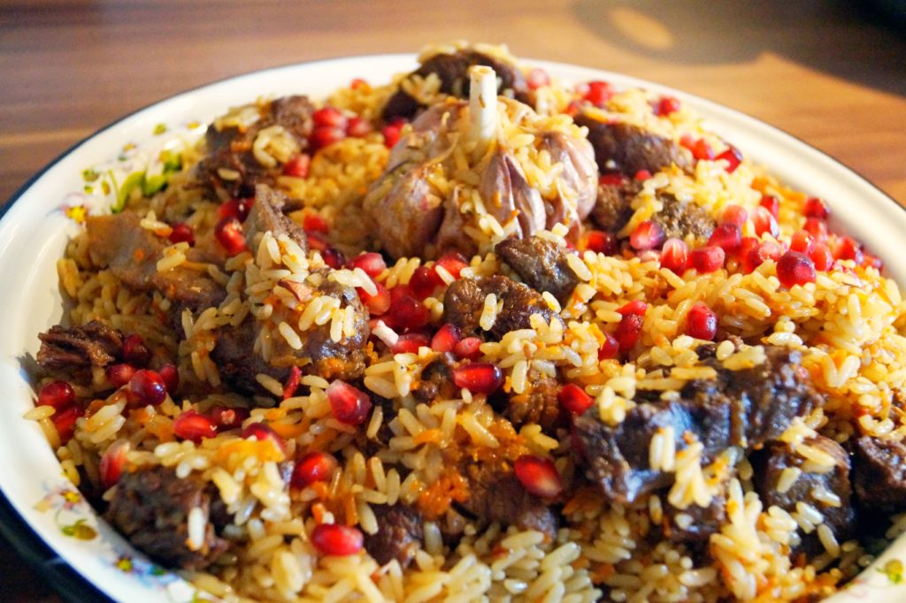
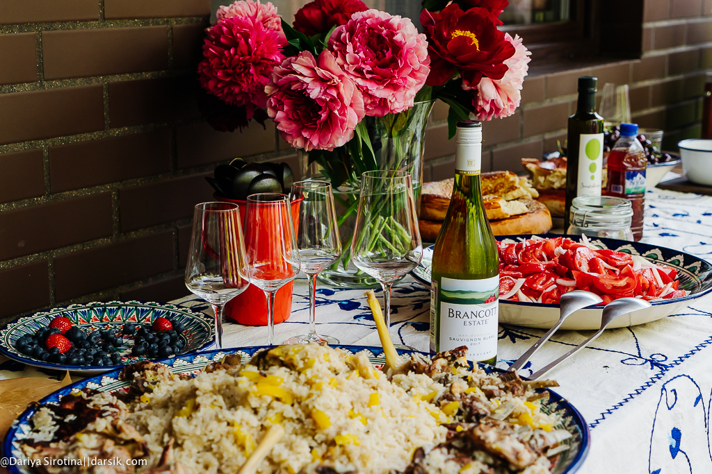

Рецепт настоящего узбекского плова

Ингредиенты (на 12 порций)
Инструкция по приготовлению
- Рис промыть так, чтобы последняя вода оставалась прозрачной. Головки чеснока очистить от шелухи, но не разделять на зубчики. 3 луковицы и морковь очистить, лук порезать полукольцами, а морковь — тонкой соломкой.
- Казан разогреть и раскалить в нем масло. В этом масле обжарить неочищенную луковицу до тех пор, пока она не почернеет. Удалить ее. Остальной лук нарезать и, помешивая, обжарить его до темно-золотого цвета, это займет чуть меньше 10 минут. Добавить баранину, нарезанную кубиками, и жарить до появления корочки.
- Добавить морковь, жарить, не мешая, 3 минуты, затем все хорошо перемешать и готовить еще 10 минут, постоянно помешивая. Влить кипяток так, чтобы он был выше всего содержимого казана на 1 см. Добавить острый сушеный перец, еще раз уменьшить огонь и тушить в течение часа.
- Смешать зиру и кориандр, растереть руками или в ступке, но лучше — руками. Добавить барбарис и отправить все вместе к мясу. Добавить соль. Уменьшить огонь и готовить до мягкости моркови примерно 10–15 минут.
- Еще раз промыть рис, дать стечь воде. Выложить на мясо, разровнять. Увеличить огонь до максимального и влить в казан кипяток так, чтобы он покрыл рис слоем в 3 сантиметра.
- Как только рис впитает воду, вдавить в содержимое казана головки чеснока, убавить огонь до среднего и тушить до готовности риса. С помощью шумовки проверить готовность: если при легком ударе по поверхности риса звук будет глухим, в плове необходимо будет сделать несколько сквозных проколов с помощью тонкой деревянной шпажки. Затем накрыть крышкой, убавить огонь до самого минимума и оставить на 30 минут.
Приятного аппетита!
